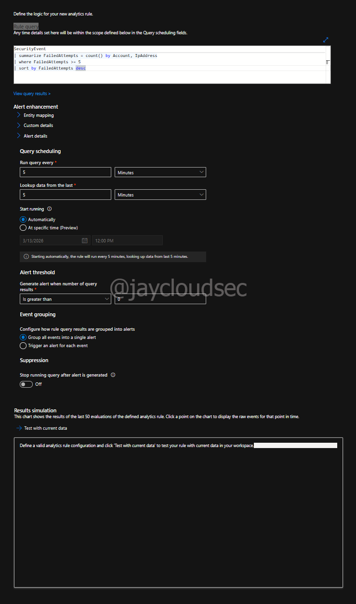
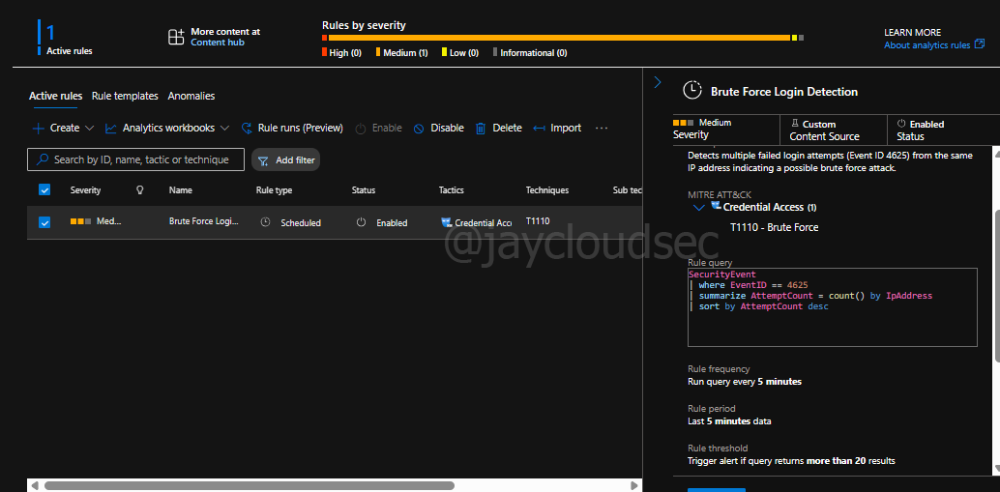
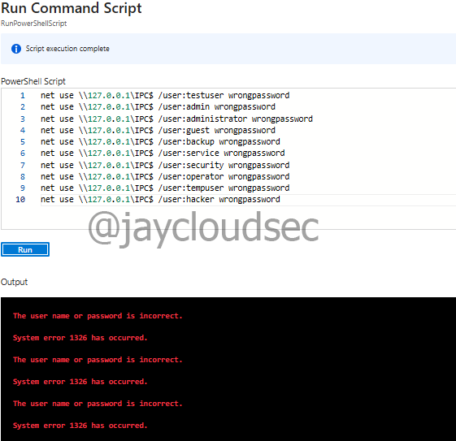

Lab 02 — Detection Engineering
Overview
This write-up documents the process of building a custom detection rule in Microsoft Sentinel using Kusto Query Language (KQL). The goal was to create a scheduled analytics rule capable of automatically detecting brute-force authentication activity — the manual investigation process covered in Lab 01, now automated through detection engineering.
Detection engineering is the practice of translating threat knowledge into automated detection logic. Where Lab 01 relied on manual KQL queries to surface suspicious activity, Lab 02 builds the rule that would fire automatically when that activity occurs.
Environment
The following architecture was used for this lab:
Windows Virtual Machine (Attack Simulation)
↓
Windows Security Event Logs
↓
Azure Monitor Agent
↓
Log Analytics Workspace
↓
Microsoft Sentinel
↓
Scheduled Analytics Rule (KQL)
↓
Automated Alert / IncidentTechnologies used:
- Microsoft Azure
- Microsoft Sentinel
- Log Analytics Workspace
- Windows Virtual Machine
- Azure Monitor Agent
- KQL (Kusto Query Language)
Detection Scenario
Brute-force attacks attempt to gain unauthorized access by repeatedly submitting incorrect login credentials. Windows systems generate Event ID 4625 whenever an authentication attempt fails. By analyzing these events in Microsoft Sentinel, a detection rule can identify patterns indicating a possible brute-force attempt.
The detection threshold used in this lab — five or more failed attempts from the same IP address — is a common starting point for brute-force detection rules in production environments. In practice, this threshold is tuned based on the organization's baseline authentication behavior.
KQL Detection Query
The following query forms the core detection logic for the analytics rule:
SecurityEvent
| where EventID == 4625
| summarize FailedAttempts = count() by Account, IpAddress
| where FailedAttempts >= 5
| sort by FailedAttempts descBreaking down the query logic:
- EventID == 4625 — filters for failed authentication events only
- summarize count() by Account, IpAddress — groups failures by account and source IP
- FailedAttempts >= 5 — applies the detection threshold
- sort by FailedAttempts desc — surfaces highest-volume sources first
Detection Rule Configuration
The analytics rule was configured in Microsoft Sentinel under Analytics → Create → Scheduled Query Rule.
Rule settings:
- Name: Multiple Failed Login Detection
- Severity: Medium
- MITRE ATT&CK Tactic: Credential Access
- Query frequency: Every 5 minutes
- Lookup window: Last 5 minutes
- Alert threshold: Results greater than 0
- Incident creation: Enabled
- Alert grouping: Disabled

Scheduled analytics rule configured in Microsoft Sentinel with KQL detection logic

Detection rule active and enabled in the Sentinel Analytics dashboard
Attack Simulation
Failed authentication attempts were simulated using the Run Command feature inside the Azure VM. RDP and SSH access were not used in this lab to minimize VM runtime and reduce costs.
The following PowerShell script was used to generate Event ID 4625 logs:
for ($i=0; $i -lt 10; $i++) {
net use \\127.0.0.1\IPC$ /user:administrator wrongpassword
}This loop executes ten failed login attempts against the local machine, each generating a Windows Security Event ID 4625 entry that flows through the log ingestion pipeline into Sentinel.

Run Command executing the PowerShell simulation script inside the Azure VM
Troubleshooting
During testing, the simulated authentication failures were successfully generated and confirmed visible in the Log Analytics workspace. However, Microsoft Sentinel did not generate alerts or incidents during the testing window.
Troubleshooting steps performed:
- Confirmed failed login events were present using manual KQL query
- Verified rule status was Enabled
- Confirmed query frequency and lookup window were set to 5 minutes
- Confirmed incident creation was enabled
- Confirmed alert threshold was set to results greater than 0
Validation query used to confirm log presence:
SecurityEvent
| where EventID == 4625
| sort by TimeGenerated descPossible causes for missing alerts:
- Low telemetry volume in a single-VM lab environment
- Scheduled rule executing outside the event generation window
- Backend processing delays within Microsoft Sentinel
- Incident management functionality migrating to the Microsoft Defender portal
Analyst note: The absence of automated alerts does not invalidate the detection engineering work. The rule logic, configuration, and validation steps are correct. In a production environment with sustained authentication activity, this rule would fire consistently — as demonstrated in Lab 04 where the same rule pattern triggered 21 automated responses against real honeypot attack data.
Detection Best Practices
Threshold tuning considerations for production environments:
- Adjust the FailedAttempts threshold based on the organization's authentication baseline
- Lower thresholds for privileged accounts — even 3 failures may warrant investigation
- Add exclusions for known service accounts that generate expected failures
- Consider time-of-day patterns — failures at 3AM carry different weight than business hours
False positive reduction strategies:
- Exclude known admin IP ranges from the detection query
- Filter out scheduled maintenance windows
- Correlate with asset inventory to identify high-value targets
- Track service account behavior separately from user accounts
MITRE ATT&CK Mapping
| Technique | ID | Detection Activity |
|---|---|---|
| Brute Force: Password Guessing | T1110.001 | Detection rule fires on repeated Event ID 4625 |
| Brute Force: Password Spraying | T1110.003 | Rule identifies multiple accounts targeted from same IP |
| Valid Accounts | T1078 | Threshold breach triggers alert for analyst review |
| Credential Access | TA0006 | MITRE tactic assigned to the analytics rule |
Analyst Conclusion
This lab demonstrates the full detection engineering workflow — translating threat knowledge into automated SIEM detection logic using KQL. The rule was correctly configured, the attack was successfully simulated, and logs were confirmed present in the workspace.
The troubleshooting section is intentionally included and not treated as a failure. Real SOC work involves detection rules that don't fire as expected — diagnosing why, validating the logic independently, and documenting the investigation is exactly what an analyst does. The ability to distinguish between a rule problem and an environment problem is a core L1 skill.
In a production environment, next steps would be:
- Extend the lookup window to 15-30 minutes to account for processing delays
- Run the detection query manually against a longer time range to verify it would have fired
- Test rule firing by increasing simulation volume beyond the threshold
- Document the rule in a detection catalog with owner, last tested date, and false positive rate
- Validate end-to-end automation — covered in Lab 04